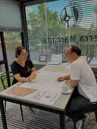
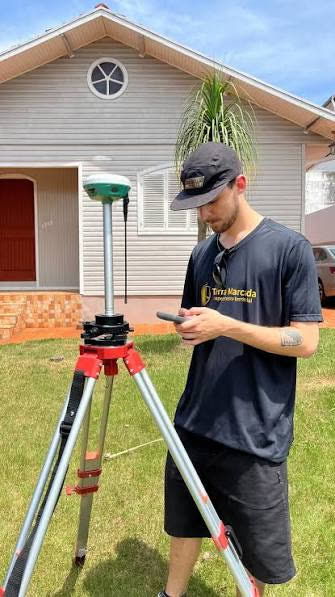

Conversa
Entendemos o que você precisa, vemos a área e dizemos quais documentos são necessários.
Início/Quem somos
A Terra Marcada faz mapeamento territorial e regularização de imóveis em Ijuí e região.
Cada trabalho passa por uma equipe especializada, do primeiro contato à entrega da documentação.
Quatro etapas, sempre explicadas antes de começar.
Entendemos o que você precisa, vemos a área e dizemos quais documentos são necessários.
Definimos o plano de voo, os pontos de controle e o prazo, para você saber o que esperar.
Drone e equipamento GNSS percorrem o terreno e registram as medidas com precisão.
Você recebe os mapas e a documentação, e acompanhamos o processo até o fim, inclusive a regularização.
Geógrafa, sócia-proprietária e diretora técnica da Terra Marcada – Mapeamentos Territoriais.
Atua de forma especializada em Regularização Fundiária Urbana e Rural (REURB), cadastro imobiliário urbano, mapeamentos georreferenciados e análise territorial.
Sua formação multidisciplinar e experiência profissional contribuem para uma compreensão abrangente do território, integrando conhecimentos geográficos, ambientais e urbanísticos aos processos de regularização de imóveis. Seu trabalho é voltado à qualificação das informações territoriais e ao desenvolvimento de soluções técnicas que auxiliam na organização, identificação e regularização de propriedades urbanas e rurais.
Ao longo de sua trajetória, também exerceu atividades docentes no ensino básico e superior, atuou na assessoria pedagógica e participou de conselhos e instâncias de planejamento e gestão municipal, incluindo o Conselho do Plano Diretor Participativo de Ijuí (COMPLADIP). Essas experiências ampliam sua compreensão das dinâmicas territoriais e da relação entre planejamento, sociedade e desenvolvimento urbano.
Trabalho feito com os mapas sobre a mesa e os equipamentos no terreno.


A Terra Marcada é uma empresa de mapeamento territorial dedicada a medir, documentar e regularizar imóveis urbanos e rurais. Unimos precisão técnica, tecnologia de ponta e um atendimento próximo e humano — porque por trás de cada lote existe uma família, uma história e um patrimônio.
Trabalhamos lado a lado com moradores, associações e prefeituras, explicando cada etapa com clareza e cuidando da burocracia para que o resultado chegue onde importa: no documento registrado.
Promover segurança jurídica e dignidade por meio do mapeamento territorial e da regularização fundiária, transformando posse em propriedade e informação geográfica em desenvolvimento.
Ser referência regional em mapeamento territorial e REURB, reconhecida pela qualidade técnica e pelo impacto social do nosso trabalho.